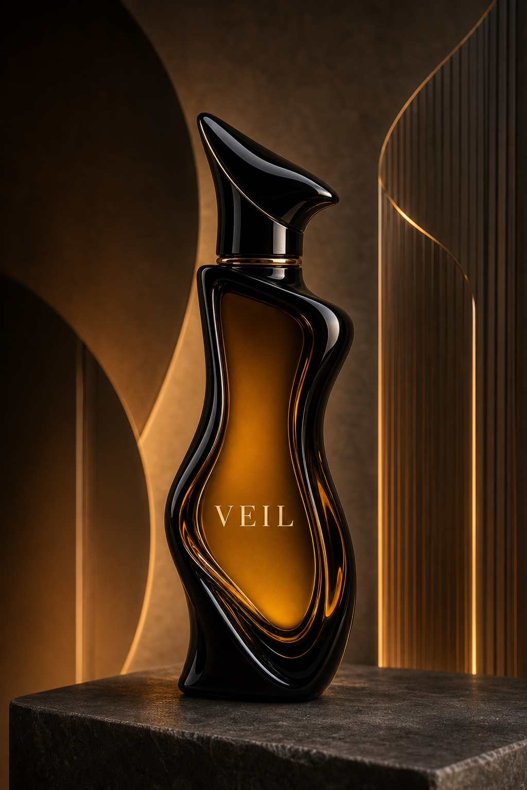
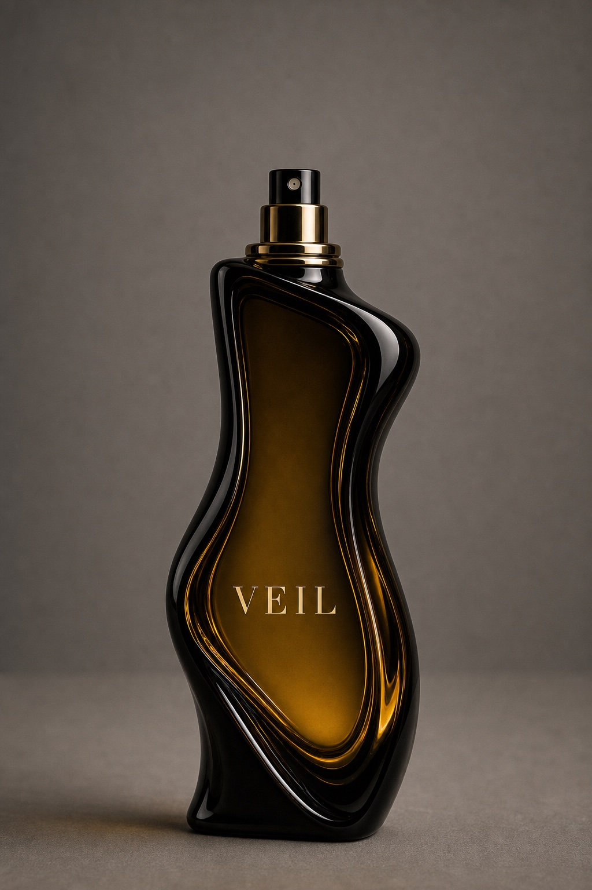
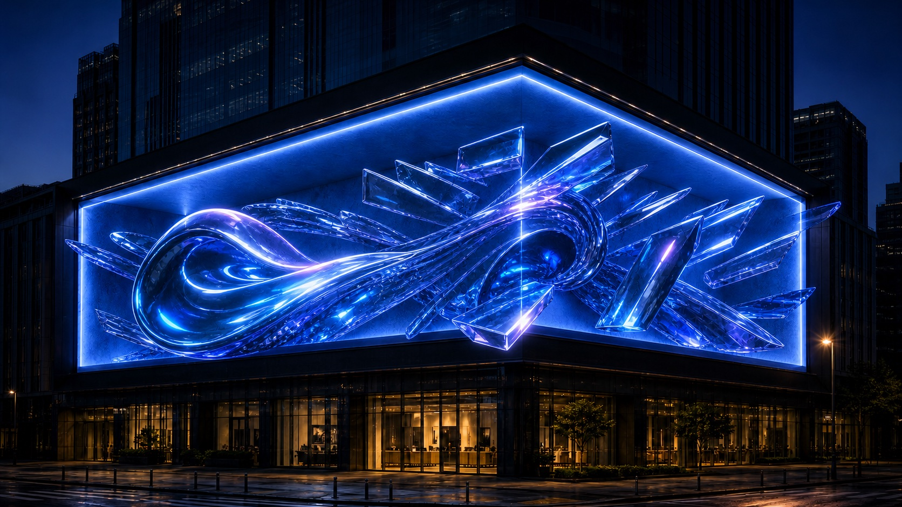

14초 광고 구성
전광판 공간에서 시작해 VEIL 병의 곡선 실루엣과 조명, 제품 등장감을 빠르게 보여주고 마지막에는 브랜드명이 남도록 구성한 숏폼 광고입니다. 제품 컷과 OOH 이미지를 같은 톤으로 맞춰 실제 캠페인 영상처럼 보이게 정리했습니다.

Part 1 / VEIL
VEIL은 밤의 잔향, 블랙 글래스, 앰버 코어, 미스트 입자를 중심으로 만든 가상 프리미엄 프래그런스 브랜드입니다. 숏폼 광고와 캠페인 세트를 같은 비주얼 규칙으로 묶어 상업 광고 포트폴리오처럼 보이게 구성했습니다.
AI Short-form Ad
전광판 공간에서 시작해 VEIL 병의 곡선 실루엣과 조명, 제품 등장감을 빠르게 보여주고 마지막에는 브랜드명이 남도록 구성한 숏폼 광고입니다. 제품 컷과 OOH 이미지를 같은 톤으로 맞춰 실제 캠페인 영상처럼 보이게 정리했습니다.
영상용 이미지는 완성 컷 하나에 의존하지 않고, 제품 기준 이미지와 전광판 목업을 따로 만든 뒤 같은 조명, 소재감, 브랜드명 노출 기준으로 다시 묶었습니다.
3D Product Concept
Latest VEIL Build
새로 정리한 3D 향수병 컷을 VEIL의 대표 결과물로 두고, 곡선형 블랙 글래스 바디와 앰버 코어, 고급스러운 제품 조명을 브랜드 기준 이미지로 사용했습니다.
Virtual Campaign
Leave Only The Trace.
제품 병의 곡선 실루엣, 병 표면 로고, 닫힘/오픈 상태, 옥외광고 배치, 시안 림라이트를 반복 기준으로 잡아 같은 브랜드에서 나온 이미지처럼 정리했습니다.


Production Harness
가상 향수 브랜드 VEIL을 만들고 밤, 잔향, 미스트, 블랙 글래스라는 키워드를 고정.
곡선형 병 실루엣, 앰버 코어, 병 표면 로고, 닫힘/오픈 상태를 기준 자산으로 정리.
레퍼런스, 제품 컷, 모델 컷, 전광판 플레이트를 분리해 생성하고 같은 브랜드 규칙으로 묶음.
로고 위치, 병 뚜껑 상태, OOH 원근, 구도 유지 여부를 확인하며 컷별로 다시 생성.
완성 컷만 나열하지 않고, 전광판 테스트와 병 상태 확인 이미지를 함께 배치해 프롬프트 수정과 결과물 선별 과정을 한눈에 보이게 정리했습니다.




Part 1 Prompt Archive
A fictional premium night fragrance brand named VEIL, built around black glass, amber light, mist, and the slogan Leave Only The Trace.
Sculptural black perfume bottle with an amber inner core, curved silhouette, glossy reflections, controlled logo placement, and luxury product lighting.
Cinematic anamorphic outdoor billboard at night, VEIL bottle presented inside a glass chamber, warm interior light, city scale, and realistic perspective.
Preserve the bottle shape, logo readability, black glass material, amber core, and billboard framing while removing inconsistent text or product distortion.
Part 2 / SAINT
SAINT는 Yura / Yuri 캐릭터 세계관을 중심으로 만든 두 번째 파트입니다. 오프닝 영상, 캐릭터 일관성, 이미지 보정, 프롬프트 수정 과정을 한 흐름으로 묶었습니다.
Anime Opening
Yura / Yuri 세계관의 다크 판타지 톤을 영상으로 보여주는 오프닝 사례.
Character Consistency


Before / After


SAINT Package
캐릭터, 키비주얼, 세계관, 스토리 플로우, 영상, 프롬프트 로그를 하나의 제작 패키지처럼 묶은 SAINT 파트의 기준 보드입니다.
Production Process
포트폴리오 목적, 결과물 종류, 필요한 장면 수, 영상 구성 방식을 먼저 고정.
캐릭터 얼굴, 헤어, 색감, 의상, 세계관 톤을 기준 이미지로 정리.
장면 목적, 카메라, 조명, 색감, 금지 요소를 포함한 생성 프롬프트 작성.
일관성 오류, 손/얼굴 문제, 색감 이탈, 과한 텍스트를 수정 프롬프트로 보정.
무거운 영상 파일은 제외하고 외부 영상 슬롯과 압축 이미지로 구성.
Prompt Archive
캐릭터의 얼굴, 헤어, 의상, 표정, 반복 기준을 잠그는 프롬프트.
초반 후킹, 장면 전환, 카메라 움직임, 결말 프레임을 정리하는 영상 프롬프트.
이미지 실패 지점과 보정 목표를 분리해 다시 생성하거나 리터칭하는 프롬프트.